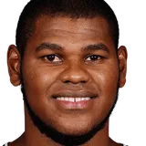
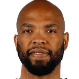

His best final NBA finish was #15 of 30, with the 2016-17 Chicago Bulls. In his 252 games for 1 team over 6 seasons they went 86–166 (34.1%), −80 games under .500, with an average final finish of 21.3.
Compare Cristiano Felicio with…
Final NBA finish, season by season
Title Finals Other playoffs Missed playoffs. #1 = champion; the dashed line is last place that season. Each point opens that season's final standings.
All 30 teams ranked in 2016-17, his best finish (#15)Teammate help
 Jimmy Butler4.52 seasons
Jimmy Butler4.52 seasons Pau Gasol1.01 season
Pau Gasol1.01 season Zach LaVine1.01 season
Zach LaVine1.01 season
Career
Regular seasons 1946-47 to 2026-27, games through Nov. 17, 2026. Records include 2026-27 to date; season counts and finishes use completed seasons. Each card opens its board. How we count.

Latest completed seasons
Season by season
Newest first; every header sorts. Final NBA finish is the team's rank among all teams that season (#1 = champion) and opens that season's standings. "Without him" uses the team-season window; the span line counts only the games between his first and last game for the team.
| 2020-21 | #21 of 30 | 31–41 43.1% | Missed playoffs | 18 of 72 | 6–12 33.3% | 25–29 46.3%span: 23–26, gap −13.6 | −13.0 | |
| 2019-20 | #24 of 30 | 22–43 33.8% | Missed playoffs | 22 of 65 | 6–16 27.3% | 16–27 37.2%span: 1–0, gap −72.7 | −9.9 | |
| 2018-19 | #27 of 30 | 22–60 26.8% | Missed playoffs | 60 of 82 | 16–44 26.7% | 6–16 27.3%span: 6–13, gap −4.9 | −0.6 | |
| 2017-18 | #24 of 30 | 27–55 32.9% | Missed playoffs | 55 of 82 | 13–42 23.6% | 14–13 51.9%span: 14–13, gap −28.2 | −28.2 | |
| 2016-17 | #15 of 30 | 41–41 50.0% | Lost 1st round 2–4 | 66 of 82 | 31–35 47.0% | 10–6 62.5%span: 10–6, gap −15.5 | −15.5 | |
| 2015-16 | #17 of 30 | 42–40 51.2% | Missed playoffs | 31 of 82 | 14–17 45.2% | 28–23 54.9%span: 24–20, gap −9.4 | −9.7 |
On/off, starts and close games
From the lineup data, 1996-97 on. On/off is net points per 100 possessions with him on the floor minus off, a different unit from the win-rate gaps. Started and off the bench are team records in those games; close games are those within 5 points in the last 5 minutes with him on the floor.
Teammate help by season
Help = Teammates Score points for honors won that season by teammates who shared a game with him. How help works.
- 2020-21
 Chicago
Zach LaVine All-Star12 g
Chicago
Zach LaVine All-Star12 g Nikola Vucevic All-Star10 g
Nikola Vucevic All-Star10 g Patrick Williams All-Rookie 2nd18 g
Patrick Williams All-Rookie 2nd18 g
More: last season's honors and other teammates
Help coming in (teammates' honors the season before): 0.1 · from Coby White (0.1)
Other teammates (no honors that season): Thaddeus Young 18 g, Coby White 17 g, Denzel Valentine 17 g, Garrett Temple 16 g, Ryan Arcidiacono 16 g, Tomas Satoransky 14 g, Lauri Markkanen 14 g, Javonte Green 11 g, Devon Dotson 10 g, Adam Mokoka 7 g, Daniel Gafford 7 g, Daniel Theis 7 g, Troy Brown 4 g, Luke Kornet 4 g and 4 more
- 2019-20Chicago
 Coby White All-Rookie 2nd22 g
Coby White All-Rookie 2nd22 g
More: last season's honors and other teammates
Help coming in (teammates' honors the season before): 0
Other teammates (no honors that season): Tomas Satoransky 22 g, Thaddeus Young 22 g, Ryan Arcidiacono 21 g, Zach LaVine 20 g, Shaquille Harrison 17 g, Luke Kornet 16 g, Chandler Hutchison 15 g, Denzel Valentine 11 g, Kris Dunn 11 g, Daniel Gafford 10 g, Adam Mokoka 8 g, Lauri Markkanen 8 g, Wendell Carter Jr 3 g, Otto Porter 2 g
- 2018-19ChicagoNo honored teammate
More: last season's honors
Help coming in (teammates' honors the season before): 0.2 · from Lauri Markkanen (0.2)
- 2017-18Chicago
 Lauri Markkanen All-Rookie 1st44 g
Lauri Markkanen All-Rookie 1st44 g
More: last season's honors and other teammates
Help coming in (teammates' honors the season before): 0
Other teammates (no honors that season): Denzel Valentine 50 g, Jerian Grant 47 g, Bobby Portis 46 g, Justin Holiday 45 g, David Nwaba 45 g, Robin Lopez 37 g, Paul Zipser 34 g, Kris Dunn 33 g, Cameron Payne 24 g, Quincy Pondexter 21 g, Noah Vonleh 20 g, Antonio Blakeney 17 g, Ryan Arcidiacono 17 g, Zach LaVine 16 g and 5 more
- 2016-17Chicago
Jimmy Butler All-NBA 3rdAll-Star61 g
More: last season's honors and other teammates
Help coming in (teammates' honors the season before): 2.5 · from Dwyane Wade (1.0)
Other teammates (no honors that season): Robin Lopez 66 g, Rajon Rondo 55 g, Nikola Mirotic 54 g, Jerian Grant 53 g, Dwyane Wade 51 g, Bobby Portis 49 g, Taj Gibson 46 g, Denzel Valentine 45 g, Doug McDermott 40 g, Michael Carter-Williams 37 g, Paul Zipser 36 g, Isaiah Canaan 29 g, Joffrey Lauvergne 13 g, Cameron Payne 10 g and 2 more
- 2015-16Chicago
Jimmy Butler All-StarAll-Def 2nd20 gPau Gasol All-Star23 g
More: last season's honors and other teammates
Help coming in (teammates' honors the season before): 6.0 · from Nikola Mirotic (0.2)
Other teammates (no honors that season): Doug McDermott 31 g, Bobby Portis 31 g, Aaron Brooks 29 g, Mike Dunleavy 24 g, E'Twaun Moore 23 g, Taj Gibson 22 g, Tony Snell 21 g, Justin Holiday 21 g, Derrick Rose 21 g, Nikola Mirotic 19 g, Cameron Bairstow 10 g, Kirk Hinrich 4 g, Joakim Noah 1 g
Record against each opponent
Regular season, completed seasons: 252 games, 86–166, against 29 franchises. Grouped by franchise (named as today); game lists keep each team's name that season.
| Games list | |||||||
|---|---|---|---|---|---|---|---|
| 13 | 5–8 | 38.5% | −3 | 0–1 (2–4 in games) | 2016-17 to 2020-21 | ||
| 13 | 7–6 | 53.8% | +1 | N/A | 2015-16 to 2020-21 | ||
| 13 | 6–7 | 46.2% | −1 | N/A | 2015-16 to 2020-21 | ||
| 12 | 5–7 | 41.7% | −2 | N/A | 2015-16 to 2020-21 | ||
| 12 | 7–5 | 58.3% | +2 | N/A | 2015-16 to 2020-21 | ||
| 12 | 4–8 | 33.3% | −4 | N/A | 2015-16 to 2020-21 | ||
| 12 | 8–4 | 66.7% | +4 | N/A | 2015-16 to 2020-21 | ||
| 12 | 6–6 | 50.0% | 0 | N/A | 2015-16 to 2019-20 | ||
| 12 | 4–8 | 33.3% | −4 | N/A | 2015-16 to 2019-20 | ||
| 11 | 2–9 | 18.2% | −7 | N/A | 2015-16 to 2020-21 | ||
| 10 | 4–6 | 40.0% | −2 | N/A | 2015-16 to 2018-19 | ||
| 10 | 1–9 | 10.0% | −8 | N/A | 2015-16 to 2018-19 | ||
| 10 | 2–8 | 20.0% | −6 | N/A | 2015-16 to 2020-21 | ||
| 8 | 5–3 | 62.5% | +2 | N/A | 2015-16 to 2020-21 | ||
| 7 | 1–6 | 14.3% | −5 | N/A | 2015-16 to 2020-21 | ||
| 7 | 1–6 | 14.3% | −5 | N/A | 2015-16 to 2018-19 | ||
| 7 | 3–4 | 42.9% | −1 | N/A | 2015-16 to 2020-21 | ||
| 7 | 1–6 | 14.3% | −5 | N/A | 2015-16 to 2018-19 | ||
| 7 | 1–6 | 14.3% | −5 | N/A | 2016-17 to 2019-20 | ||
| 7 | 3–4 | 42.9% | −1 | N/A | 2016-17 to 2019-20 | ||
| 6 | 0–6 | 0.0% | −6 | N/A | 2016-17 to 2020-21 | ||
| 6 | 2–4 | 33.3% | −2 | N/A | 2015-16 to 2019-20 | ||
| 6 | 1–5 | 16.7% | −4 | N/A | 2016-17 to 2019-20 | ||
| 6 | 1–5 | 16.7% | −4 | N/A | 2015-16 to 2020-21 | ||
| 6 | 1–5 | 16.7% | −4 | N/A | 2016-17 to 2019-20 | ||
| 6 | 2–4 | 33.3% | −2 | N/A | 2016-17 to 2020-21 | ||
| 5 | 0–5 | 0.0% | −5 | N/A | 2015-16 to 2018-19 | ||
| 5 | 2–3 | 40.0% | −1 | N/A | 2015-16 to 2020-21 | ||
| 4 | 1–3 | 25.0% | −2 | N/A | 2016-17 to 2018-19 |
Rows add up to his career record in his games. A playoff series counts when he played in it; early round-robin games show as games only. How we count.
Playoffs, with and without him
He played every playoff game for these teams, so there is no "without him" record.
Arrival and departure
Team wins per 82 games the season before he arrived vs his first season there, and his last season vs the season after he left. Per 82 so short seasons compare fairly. These are team records, not a measure of what he did.
Best duos
Team record in regular-season games both played, top 10 by win %, at least 50 games together.
- Jimmy Butler
42–39 51.9%
 Nikola Mirotic
39–39 50.0%
Nikola Mirotic
39–39 50.0% Dwyane Wade
24–27 47.1%
Dwyane Wade
24–27 47.1% Doug McDermott
33–38 46.5%
Doug McDermott
33–38 46.5%
Taj Gibson 31–37 45.6% Rajon Rondo
25–30 45.5%
Rajon Rondo
25–30 45.5% Bobby Portis
48–89 35.0%
Bobby Portis
48–89 35.0% Robin Lopez
54–102 34.6%
Robin Lopez
54–102 34.6% Denzel Valentine
41–82 33.3%
Denzel Valentine
41–82 33.3% Jerian Grant
32–68 32.0%
Jerian Grant
32–68 32.0%